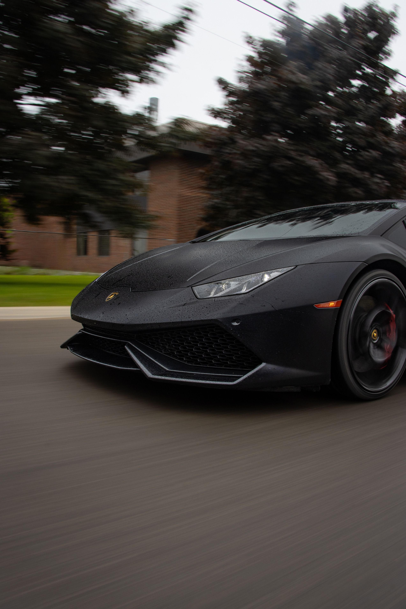

MORE THAN TRANSPORTATION
Celebrating automotive passion
Driven Dreams is a car showcase created for people who enjoy learning about vehicles and discovering what makes each one unique. From timeless classics to modern performance machines, cars bring together engineering, creativity, and personal style.
Our goal is to introduce visitors to different automotive categories and provide an easy place to explore their designs, histories, and standout features.
